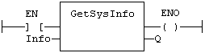

Function
Returns system information.
|
Name |
Type |
Description |
|
INFO |
DINT |
Identifier of the requested information. |
|
Name |
Type |
Description |
|
Q |
DINT |
Value of the requested information or 0 if error. |
The INFO parameter can be one of the following predefined values:
|
Value |
Description |
|
_SYSINFO_TRIGGER_MICROS |
Programmed cycle time in micro-seconds. |
|
_SYSINFO_TRIGGER_MS |
Programmed cycle time in milliseconds. |
|
_SYSINFO_CYCLETIME_MICROS |
Duration of the previous cycle in micro-seconds. |
|
_SYSINFO_CYCLETIME_MS |
Duration of the previous cycle in milliseconds. |
|
_SYSINFO_CYCLEMAX_MICROS |
Maximum detected cycle time in micro-seconds. |
|
_SYSINFO_CYCLEMAX_MS |
Maximum detected cycle time in milliseconds. |
|
_SYSINFO_CYCLESTAMP_MS |
Time stamp of the current cycle in milliseconds (OEM dependent). |
|
_SYSINFO_CYCLEOVERFLOWS |
Number of detected cycle time overflows. |
|
_SYSINFO_CYCLECOUNT |
Counter of cycles. |
|
_SYSINFO_APPVERSION |
Version number of the application. |
|
_SYSINFO_APPSTAMP |
Compiling date stamp of the application. |
|
_SYSINFO_CODECRC |
CRC of the application code. |
|
_SYSINFO_DATACRC |
CRC of the application symbols. |
|
_SYSINFO_FREEHEAP |
Available space in memory heap (bytes) |
|
_SYSINFO_DBSIZE |
Space used in RAM (bytes) |
|
_SYSINFO_ELAPSED |
Seconds elapsed since startup |
In LD language, the operation is executed only if the input rung (EN) is TRUE. The output rung (ENO) keeps the same value as the input rung. In IL, the input must be loaded in the current result before calling the function.
Q := GETSYSINFO (INFO);
The function is executed only if EN is TRUE.
ENO keeps the same value as EN.

Op1: LD INFO
GETSYSINFO
ST Q